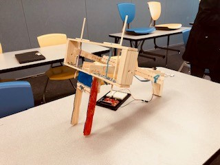
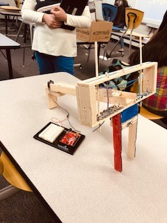

Ping Pong Ball Slinger 101
For this project, our skills with engineering and Arduino were put to the test. My partner, Daniel Garciacano, and I had to engineer and create a contraption that would launch the ping pong ball over the net. In this project, we drew inspiration from the ancient trebuchet catapults and incorporated an Arduino servo motor as the launching mechanism.
 If we had more time, I would've improved this project by making the catapult fully automatic. Currently, the rubber band is manually reset every time, but with more time, I hope to create a chain that would use DC motors in order to spin and automatically pull and release the rubber band.